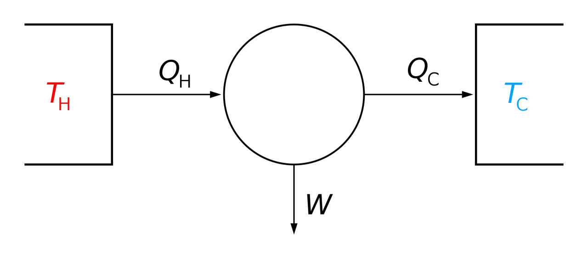

Central Termosolar
Contents
MEC501 - Manejo y Conversión de Energía Solar Térmica
9. Central Termosolar#
Profesor: Francisco Ramírez Cuevas
Fecha: 4 de noviembre 2022
9.1. Introducción#
Los colectores estacionarios permiten alcanzar temperaturas relativamente bajas. Esto debido a que el absorvedor y la apertura del sistema (definido por la covertura transparente) tiene áreas similares. El formato es ventajoso para sistemas estacionarios, ya que permite capturar gran parte de la radiación solar difusa y directa sin necesidad de cambiar la orientación del colector.
Intuitivamente, una forma de aumentar la temperatura de trabajo es reducir el área del absorbedor y aumentar el área de la apertura. Esto permite incrementar el flujo de energía por unidad de superficie y, por consecuencia, aumentar la temperatura de salida del fluido de trabajo.
Llamamos concentración solar a la práctica de aumentar la razón de áreas entre la apertura y el absorbedor.
¿Para qué necesitamos mayores temperaturas?
La mejor forma de entender el efecto de un aumento de temperatura es mediante el ciclo de Carnot, un modelo idealizado de un ciclo termodinámico de potencia que opera entre una fuente a temperatura \(T_\mathrm{H}\) y que rechaza calor a un sumidero con temperatura \(T_\mathrm{C}\).
{kind=link}
El ciclo de Carnot define la máxima eficiencia que puede alcanzar un ciclo termodinámico operando en estas condiciones:
Comúnmente, el calor \(Q_\mathrm{C}\) es rechazado al ambiente y, por lo tanto, \(T_\mathrm{C} = T_a\), donde \(T_a\) es la temperatura atmosférica.
Así, la eficiencia termodínámica del sistema está condicionada por \(T_\mathrm{H}\).
En conclución, la concentración solar permite aumentar la eficiencia termodinámica del sistema y, por consecuencia, un mejor aprovechamiento de la energía solar térmica.
¿Cómo transformamos la energía solar capturada en energía útil?
En el caso de los colectores estacionarios, la principal función es obtener agua caliente. La concentración solar, sin embargo, permite generar vapor de agua, el cual puede ser utilizado para generar energía eléctrica a travéz de una turbina de vapor acoplada a un alternador.
Una central termosolar es una instalación de generación de energía eléctrica a través de un ciclo termodinámico de vapor.
Los principales componentes de una central termosolar son:
Sistemas de captura de energía solar térmica (concentradores solares)
Sistema de transporte y almacenaje de energía térmica (Fluído de transferencia de calor)
Sistema de conversión de energía térmica a energía eléctrica (Ciclo termodinámico)
A continuación revisaremos los aspectos principales de cada uno de estos componentes
9.2. Sistema de captura de energía solar térmica#
Para la captura de energía solar en centrales termosolares se utilizan colectores solares de concentración.
El colector de concentración se compone de dos partes:
Un concentrador, encargado de enfocar los rayos del sol en un área de menor tamaño
Un receptor, encargado de convertir la energía concentrada en calor útil.

Los concentradores solares puede ser de diversos formatos:
Reflectores o refractores (lentes). Comúnmente, reflectores
Cilíndricos o parabólicos
Continuos o segmentados.
El receptor puede ser convexo, plano, cilíndrico o concavo. Suelen también estar cubierto por un material transparente separado a una pequeña distancia de la superficie del receptor, generando así un efecto aislante. El espacio entre el receptor y el material transparente puede ser aire o vacío.

Un aspecto fundamental de los colectores solares de concentración es la relación de concentración, \(C_r\), definida como:
donde, \(A_c\) es el área del concentrador, y \(A_r\) el área del receptor.
Este parámetro puede variar desde 1 a valores del orden de 10.000. A mayor nivel de concentración mayor temperatura, pero menor caputa luz incidente en ángulos oblicuos.
Así, a mayor nivel de concentración, mayores serán los requerimientos para los elementos ópticos y de seguimiento.
9.2.1. Tipos de concentradores solares#
Concentrador de canal parabólico
Es la tecnología más madura en centrales termosolares
Consiste en un tubo que pasa por el punto focal de un canal parabólico
Las relaciones de concentración pueden variar entre 10 - 85
{kind=link}
Reflector lineal Fresnel
El reflector lineal de Fresnel se basa en el principio de los lentes de Fresnel. Estos lentes permiten enfocar luz de forma similar a un lente convexo, pero con un volumen de material menor. Se utilizan en diversas aplicaciones como faros, lámparas y focos de automoviles.
{kind=link}
La siguiente imagen muestra como el lente de Fresnel redirecciona los rayos de una fuente en el punto focal (más info acá).
{kind=link}
El reflector lineal Fresnel opera de forma similar a un lente de Fresnel pero con espejos en lugar de lentes.
Las relaciones de concentración pueden ser entre 10 - 40.

Concentrador de disco parabólico
Consiste en un paraboloide que concentra la luz en un punto focal
El principio de funcionamiento es similar al de una antena, con sistema de seguimiento de dos ejes.
La relación de concentración varía entre 600 - 2000.
{kind=link}
Colector de helióstatos
Similar al concentrador de disco parabólico pero a gran escala.
El receptor se ubica en la punta de una torre cental.
Una serie de espejos planos móbiles, también denominados heliostatos concentran la radiación solar hacia el receptor.
Las relación de concentración en estos sistemas es del orden de 300 - 1500

9.3. Almacenamiento y transporte de energía térmica#
El principal componente de este sistema es el fluido de transferencia de calor (HTF por sus siglas en ingles). El HTF es el encargado de transportar y almacenar la energía térmica capturada en el receptor de forma eficiente.
Las propiedades más importantes son:
Temperatura de cambio de fase \(T_{fg}\) menor a la temperatura de operación del ciclo
Calor específico \(C_p\) alto (almacenamiento de calor)
Conductividad térmica \(k_f\) alta
viscosidad baja y densidad alta.
9.3.1. Agua#
El agua es el HTF más popular en aplicaciones industriales debido a su gran entalpía de evaporación, calor específico y baja viscosidad.
En las centrales termosolares contemporaneas, el agua opera como HTF y es convertida en vapor directamente en el receptor. Sin emgargo, esto reduce la conductividad térmica y la capacidad de almacenar calor por tiempos superiores a 1-2 horas.
En las centrales termosolares modernas, el agua es convertida a vapor indirectamente a través de un intercambiador de calor por donde circula un HTF que transporta la energía térmica capturada en el receptor.
9.3.2. Aceites térmicos#
Los aceites térmicos permiten temperaturas de operación de hasta 300 - 400° C. La principal desventaja de estos aceites radica en su flamabilidad y descomposición a temperaturas elevadas.
La siguiente tabla corresponde a las propiedades de un HTF de la compañia Omnitech.
{kind=link}
9.3.3. Sales fundidas#
Los líquidos iónicos o sales fundidas, son sales con bajo punto de fusión que permiten operar a temperaturas elevadas entre 250 a 1000° C. Tienen viscocidad relativamente baja, alta estabilidad térmica y no son inflamables. Debido a su alto calor específico, permiten almacenar calor hasta por 15 horas contínuas.
Su principal desventaja está asociada a la alta corroción. Esto debido a que las sales son higroscópicas, es decir, absorben la humedad del aire con facilidad. Sin embargo, hay investigación en curso que busca reducir este problema
9.4. Ciclos termodinámicos para conversión de energía solar térmica#
9.4.1. Ciclo Rankine#
La mayoría de las centrales termosolares operan en base al ciclo Rankine. Este ciclo se basa en la generación de energía mecánica a través de turbinas por donde circula vapor.
En su forma simplificada, el ciclo Rankine está compuesto de una caldera (boiler) que suministra el calor al fluido, una turbina (turbine) por donde circula el vapor, un condensador (condenser) encargado del rechazo de calor y del cambio de fase vapor-agua, y una bomba (pump), que alimenta a la caldera.
{kind=link}
Es práctica común complementar el ciclo con etapas de recalentamiento y regeneración con el fin de mejorar la eficiencia térmodinámica.
Ciclo Rankine con recalentamiento

Ciclo Rankine regenerativo
{kind=link}
9.5. Características de una central termosolar#
El esquema básico de una central termosolar consiste en un ciclo térmico donde el calor de la caldera es reemplazado por el calor extraido por el concentrador solar. Comúnmente, las centrales solares utilizan sistemas de almacenamiento de calor en base a sales fundidas o cerámicos, además de una caldera como backup, que permiten una operación continua duarante periodos nublados y durante la noche.
{kind=link}
En el caso de sales fundidas, estas pueden operar directamente en el circuito del colector (como HTF), o bien solo para almacenaje de energía. En el segundo caso, se necesita un intercambiador de calor para transferir el calor del HTF a las sales fundidas.
9.5.1. Central solar de colectores parabólicos#
Están basadas en colectores de canal parabólico
Correponde a la tecnología más madura y popular en centrales solares.
El sistema puede alcanzar temperaturas entre 60 - 400°C
Comúnmente, utlizan aceites térmicos como HTF, y en menor medida sales fundidas.
El siguiente video muestra el detalle de una central solar piloto basada en sales fundidas. El proyecto comenzó su operación el 2021, y es llevado a cabo por DLR (Deutsches Zentrum für Luft- und Raumfahrt, Alemania) y University of Évora (Portugal). Más información acá.
En la siguiente imagen se muestra una fotografía de la central solar de concentradores parabólicos Solar Energy Generating Systems (SEGS) en el desierto Monjave, California, Estados Unidos, con capacidad de 160 MW.

La limpieza de los canales parabólicos es crítica para el correcto funcionamiento del sistema, y existen equipos especializados para esto.
El esquema a continuación corresponde a un ciclo típico de una central solar parabólica. Esta planta opera con aceite térmico como HTF, utiliza sales fundidas para el almacenamiento de calor
{kind=link}
La siguiente lista comprende las 10 centrales solares de canal parabólico con mayor capacidad:
{kind=link}
9.5.2. Central solares de torre de potencia#
Es la segunda alternativa más popular en centrales solares
Pueden alcanzar temperaturas entre 150 - 2000°C.
Comúnmente, utilizan sales fundidas como fluido de trabajo, aunque también existen centrales en base a vapor.
En el caso de las sales fundidas, el sistema permite una autonomía de más de 15 horas sin presencia de radiación solar.
Debido a su gran tamaño, permiten calentar grandes volúmenes de fluido con alto nivel de concentración.
La imagen a continuación corresponde a la planta solar Cerro Dominador en María Elena, Antofagasta, Chile. La planta tiene una capacidad de 110 MW, el HTF es sales fundidas y tiene una autonomía de 17.5 horas.

La siguiente lista comprende las 10 centrales con mayor capacidad basadas en concentrador de canal parabólico:
{kind=link}
9.5.3. Central de reflector linear Fresnel#
Una tecnología relativamente nueva en centrales solares
Permite alcanzar temperaturas entre 60 - 250°C
Operan con vapor como HTF.
Debido a su ligera estructura tienen el pontencial de ser instalados en techos de edificaciones.
Actualmente solo existen dos plantas basada en esta tecnología:
Dhursar, distrito de Jaisalmer, India. Tiene una capacidad nominal de 125 MW y está basada en vapor de agua. Opera desde el año 2014
DCTC Dunhuang, región de Gansu, China. Tiene una capacidad nominal de 50 MW y está basada en sales fundidas como HTF. Opera desde el 2018
La siguiente imagen corresponde a la planta DCTC Dunhuang en China.

En el siguiente video se muestra el funcionamiento de una planta piloto desarrollada por la compañía Industrial Solar
9.5.4. Centrales de disco parabólico#
Permite alcanzar temperaturas de trabajo entre 100 - 1500° C
La principal desventaja es el mecanismo para remover la energía térmica.
El diseño más popular está basado en motores Stirling acoplados en el receptor.
No existen plantas operativas basadas en esta tecnología
{kind=link}
En el siguiente video se explica el funcionamiento de las centrales de disco parabólico.
9.6. Referencias#
Kalogirou S. A. Solar Energy Engineering Processes and Systems, 2nd Ed, Academic Press, 2014
Chapter 3.6 Concentrating collectors
Chapter 10 Solar Thermal Power Systems
Duffie J. A., Beckman W. A. and Blair N. Chapter 17. Solar Thermal Power Systems in Solar Engineering of Thermal Processes, 5th Ed, Jhon Wiley and Sons, 2020